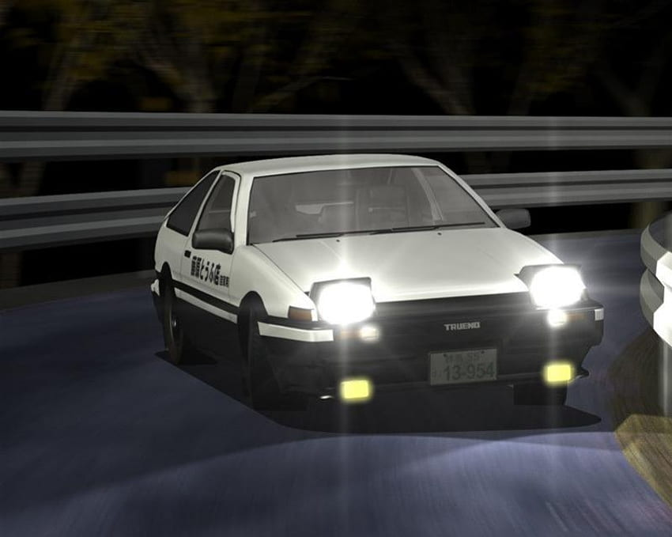

Who is he?
Takumi Fujiwara is the son of the legendary street racer, Bunta Fujiwara. In spite of such a fine pedigree, he has no real interest in racing at first. In fact, he states that he hates driving. At the age of 13 his father had him start making deliveries for his business, running up and down Akina mountain to deliver tofu to the hotel at the top. At the same time, he started to train his driving skills. One way he did this was by putting a cup of water in his cup holder, telling him he couldn't spill a drop. If he managed to do so, the tofu would arrive unharmed. Of course, it also helped his driving ability, as he was forced to learn how to drive smoothly, to avoid damaging his precious cargo, and quickly, to make sure he wasn't up all night doing tofu runs. After 5 years of doing this, he has become the most skilled downhill driver in Akina, surpassed only by his father.
Normally a reserved individual, Takumi is one of those people whose friends came to them, rather than the other way around. He also has a strong sense of justice, and a dislike for people who don't share those same feelings. Intelligence wise, he isn't what one would call book smart, but he has more than enough intuition and physical skill to make up for it and brute force his way through life.

Age: 18
Height: 5'8"
Weight: 127 pounds
Hair color: Brown
Eye color: Blue
Takumi's White Horse
Takumi's 86

Takumi drives his father's Zenki model Toyota Sprinter Trueno GT-APEX, or simply, the AE86. By all accounts an old car, but in spite of this he has made it work as he was thrust into the street racing world. Few things can compensate for skill and good driving sense, which Takumi has in spades. Not only this, but with the 86's light weight, and powered by the 1.6 liter 4A-GE inline 4, a punchy engine for it's class, it's perfectly suited for the downhill racing that he is experienced in. This combination has allowed him to come out on top in every battle he's fought. Unfortunately though, the car is beginning to show it's age, especially as Takumi encounters racers of increasing skill, driving cars of increasing speed and maneuverability, leaving him to barely eek out a victory at times.
His Friends and Family
Bunta Fujiwara
His father.
Itsuki, Iketani, and Kenji
His closest friends.
Natsuki Mogi
His girlfriend.
His Many Battles
Versus Keisuke Takahashi and his RX-7 FD
Technically 2 races, the first being when Takumi was on a tofu delivery run down Akina and began (most likely by accident) an improptu battle with Keisuke. Takumi passed him, to the shock of Keisuke, and later completely lost him after using a scandinavian flick, or inertia drift. The second battle was when Keisuke, knowing he had to prove that he could beat some old junker from the 80s, indirectly challenged Takumi to a battle.
Versus Takeshi Nakazato and his R32
He fights Takeshi. No one believes he will win, but at the five-hairpin section of the Akina downhill, as Takeshi's R32's front tires begin to lose grip, turns in and takes the inside line, passing Takeshi. As he's passing, Takeshi loses his cool and pushes his car to hard, causing it to spin out and crash.
Versus Shingo Shoji and his EG6
At first Takumi decided not to accept Shingo's duct-tape deathmatch challenge, but after Shingo causes Itsuki to crash, thinking it was actually him, Takumi decides he can't back down. Throughout the battle Shingo continually toys with Takumi, staying just behind him, but pulling ahead once to show he could pass him whenever he wants. At first, Takumi struggles with the tape, at one point nearly crashing as well as almost breaking his hand. Despite this, he soon gets the hang of it, noticing that he can go through corners faster if he uses the steering less. Slowly but surely Shingo notices that Takumi is not going to give in to the pressure, and decides to end things where they were by causing Takumi to crash. He pulls in closer and hits his bumper, causing him to spin out, but Takumi manages to pull out of the spin, not far behind Shingo. Shingo chalks it up to good luck, but Takumi is furious, saying there's no way he could lose to scum like Shingo.
Versus Mako and Sato, known as "Blue Impact", and their Sileighty
They race, Blue Impact spins out after Mako pushes the car too far during a turn, and Takumi narrowly avoids her car.
Versus Kenta Nakamura and his S14
Since it had started raining towards the latter half of Keisuke and Takeshi's up-hill battle on Myogi mountain, Kenta, who drove in the rain often to save money on tires, decided that this was his chance to try and defeat Takumi. In spite of believing he was superior in the rain, Takumi quickly overtakes Kenta.
Versus Ryosuke Takahashi and his RX-7 FC
The battle that everyone had been waiting for, inbetween Takumi Fujiwara and Ryosuke Takahashi, Keisuke's older brother. Ryosuke loses.
The story continues